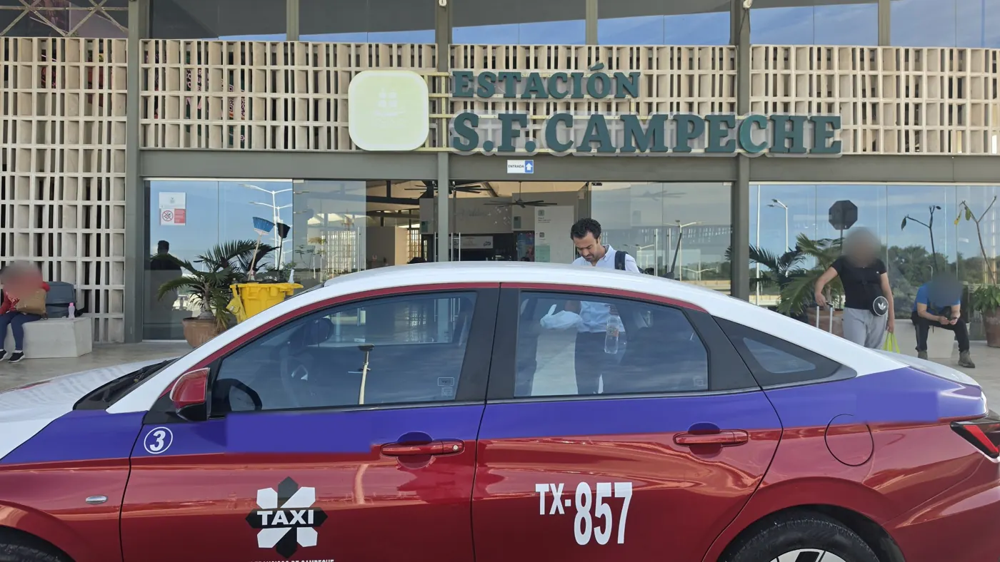
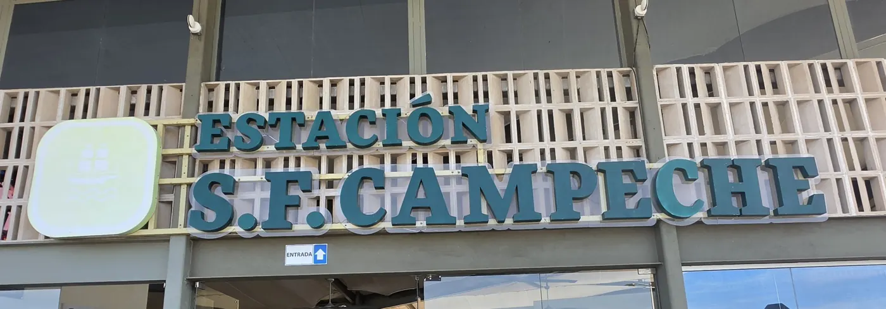
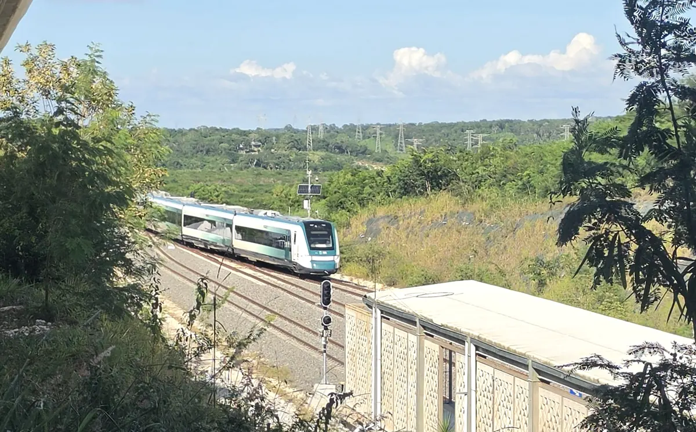
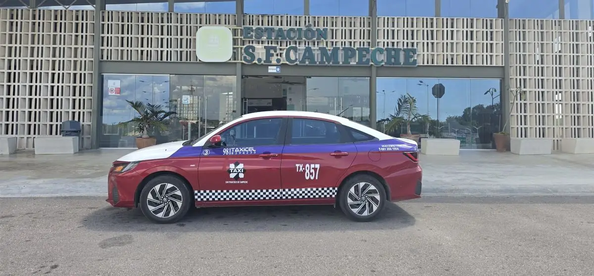

Taxi al Tren Maya, $300
Te llevamos a la estación de Campeche o te recogemos al bajar del tren y te llevamos a tu hotel. Sedán hasta 4 personas, van para grupos. Te esperamos si el tren se retrasa.





Precios
Cómo funciona
🚈 ¿Viajas ligero? Otra opción
Queremos que elijas lo que más te conviene. Si viajas solo, con poco equipaje y de día, el Tren Ligero de la ciudad también va de la estación del Tren Maya al Centro Histórico. Si vienes con familia, maletas, de noche o quieres llegar a la puerta de tu hotel, te llevamos por $300.
| 🚈 Tren Ligero | 🚕 Taxicel | |
|---|---|---|
| Viaje al Centro | unas 52 min | unos 25 min |
| Salidas | horarios fijos (10 al día) | cuando llega tu tren, 24 h |
| Te deja | en sus paradas | en la puerta de tu hotel |
| Equipaje | ligero | con maletas, hasta 4 personas |
- ⏰ ¿Tu Tren Maya llega tarde? El último Tren Ligero sale de la estación a las 9:55 pm. Si llegas después o se te va, te esperamos en la estación: mándanos la hora de tu tren.
- 🚏 ¿El Tren Ligero te dejó en el Centro? Si aún necesitas llegar a tu hotel, pídenos un taxi desde la parada.
Ver horarios del Tren Ligero
| Sale de la estación | Llega al Centro |
|---|---|
| 6:23 am | 7:15 am |
| 7:06 am | 7:58 am |
| 12:00 pm | 12:52 pm |
| 1:40 pm | 2:32 pm |
| 3:10 pm | 4:02 pm |
| 4:00 pm | 4:52 pm |
| 5:25 pm | 6:17 pm |
| 6:16 pm | 7:08 pm |
| 7:31 pm | 8:23 pm |
| 9:55 pm | 10:47 pm |
| Sale del Centro | Llega a la estación |
|---|---|
| 5:21 am | 6:13 am |
| 10:05 am | 10:57 am |
| 11:56 am | 12:48 pm |
| 1:16 pm | 2:08 pm |
| 2:34 pm | 3:26 pm |
| 4:04 pm | 4:56 pm |
| 4:54 pm | 5:46 pm |
| 6:19 pm | 7:11 pm |
| 8:25 pm | 9:17 pm |
Horarios según el cartel de la estación al 20 de noviembre de 2026, de lunes a domingo. Pueden cambiar: confírmalos en la página de Facebook “Tren Ligero de Campeche” antes de viajar. Los fines de semana hay salidas extra en parte de la ruta.
Lo que incluye tu viaje
Preguntas frecuentes
¿Cuánto cuesta un taxi a la estación del Tren Maya en Campeche?
$300 MXN en sedán para hasta 4 personas, entre la estación y la ciudad.
¿Qué pasa si el tren se retrasa?
Te esperamos. Si tu tren se retrasa hasta 20 minutos, no cobramos tiempo de espera. Mándanos el día y la hora de tu tren al reservar.
Somos más de 4, ¿qué hacemos?
Tenemos van para grupos. Escríbenos por WhatsApp y te mandamos el precio.
¿Puedo pagar con tarjeta?
Sí, tarjeta de débito o crédito, o efectivo. También damos factura.